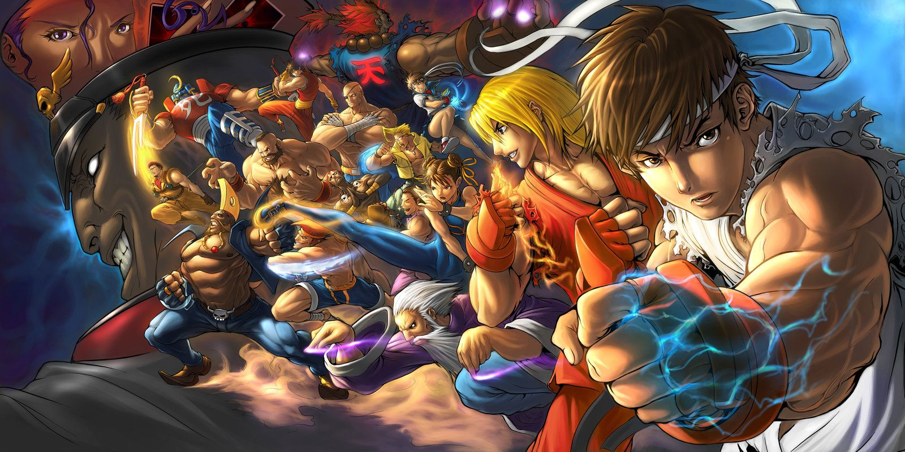
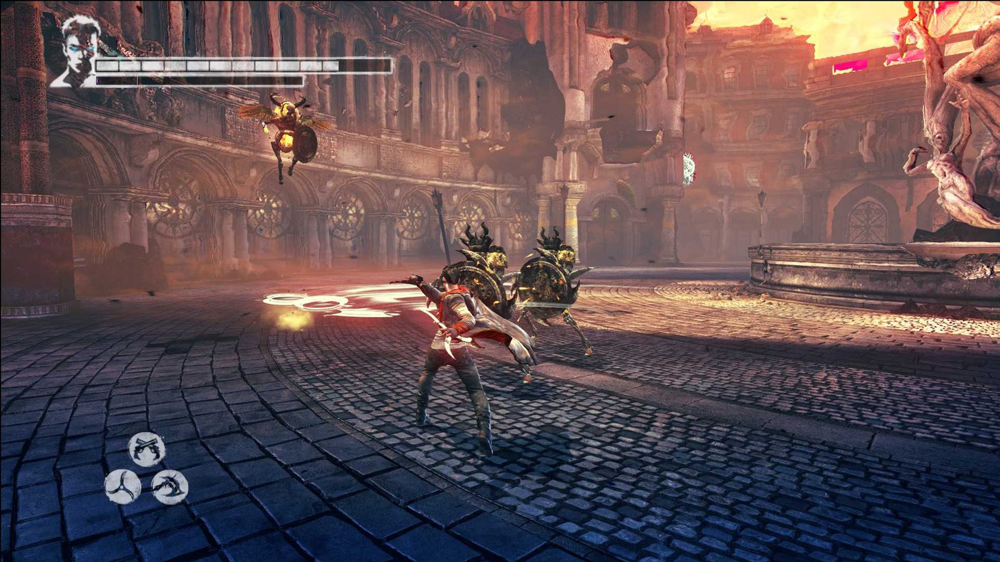

Action Игры: Динамика и Адреналин
Жанр Action, или экшен, характеризуется быстрым темпом игры, динамичным геймплеем и акцентом на реакции и ловкости игрока. В Action играх важно быстро принимать решения, точно управлять своим персонажем и эффективно использовать имеющиеся инструменты и оружие. Этот жанр охватывает широкий спектр поджанров, от шутеров от первого лица до боевиков с видом от третьего лица, и предлагает невероятное разнообразие игрового опыта.
Поджанры Action:
- Шутеры от первого лица (FPS): Игрок видит мир глазами своего персонажа. Фокус на стрельбе и тактике.
- Шутеры от третьего лица (TPS): Игрок видит своего персонажа со стороны. Обычно сочетает стрельбу с элементами рукопашного боя и более широким обзором.
- Beat 'em up (Рядовой бой): Боевик с упором на рукопашный бой и комбинации ударов.
- Hack and slash (Руби и режь): Упор на быстрые и жестокие сражения с большим количеством врагов.
- Fighting games (файтинги): Двумерные или трехмерные игры, в которых игроки сражаются друг с другом, используя различные боевые приемы.
Примеры Action игр:
Шутеры от первого лица (FPS):
- Call of Duty
- Battlefield
- Counter-Strike
- Halo
- Doom
- Overwatch
- Apex Legends
Шутеры от третьего лица (TPS):
- Gears of War
- Resident Evil 4
- The Last of Us
- Uncharted
- Devil May Cry 5

Devil May Cry 5
Beat 'em up:
- Streets of Rage 4
- Scott Pilgrim vs. The World
- Double Dragon
Hack and slash:
- Devil May Cry
- God of War
- Bayonetta
- Diablo
- Dark Souls
Fighting games:
- Street Fighter
- Mortal Kombat
- Tekken
- Guilty Gear
- Super Smash Bros.
Это лишь малая часть огромного мира Action игр. Каждый поджанр предлагает свой уникальный опыт, и выбор лучшей игры зависит от ваших личных предпочтений.